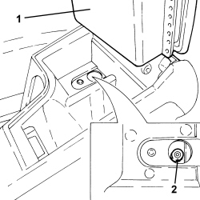

3380A04 HANDBRAKE - ADJUST TRAVEL
- Path
- Procedures > 33 BRAKES > 3380 HANDBRAKE > 3380A HANDBRAKE CONTROL AND LINKAGE > 3380A04 HANDBRAKE - ADJUST TRAVEL
- Kind
- repair procedure (removal / refitting; the operation number is the code)
- Applies to
- all engines; all production periods
- Interactive page
- https://sloeber94.github.io/elrnDB-aBrrSpdr/en/#/946002162
Applies to: all engines; all production periods
- Position the vehicle on a lift.
1. Lift up the cover for the front armrest with oddments pocket.
- Remove the lower trim for the oddments compartment.
2. Loosen the adjustment nut for the handbrake control cable by at least two or three turns in order to ensure that the cable is completely loosened.

Applies to: all engines; all production periods
- Start the engine and with the engine idling, press the brake pedal forcefully at least ten or fifteen times.
- Retighten the handbrake control cable adjustment nut to the original position marked previously.
- Check that the rear wheels are free to turn with the handbrake lever at rest.
- Check that the handbrake braking action begins from the first click.
- At the end of the adjustment, check that the handbrake lever engages between five and six notches of the toothed sector.
- Switch off the engine.
- Place the lower trim for the oddments compartment in its housing and lower the front armrest.
- Remove the vehicle from the lift.